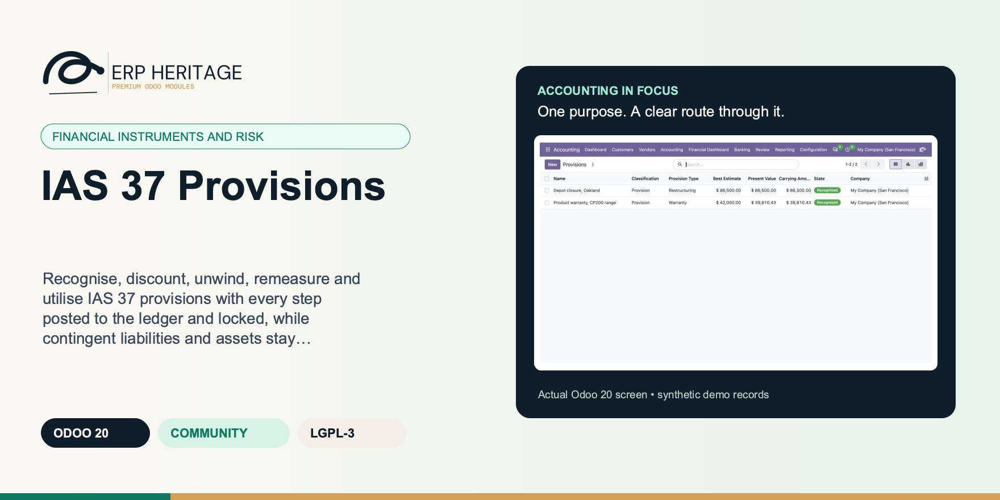
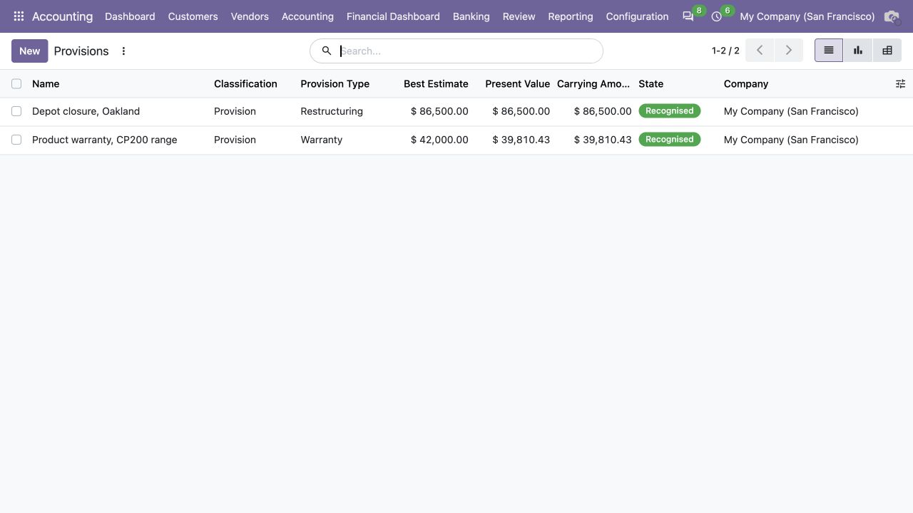
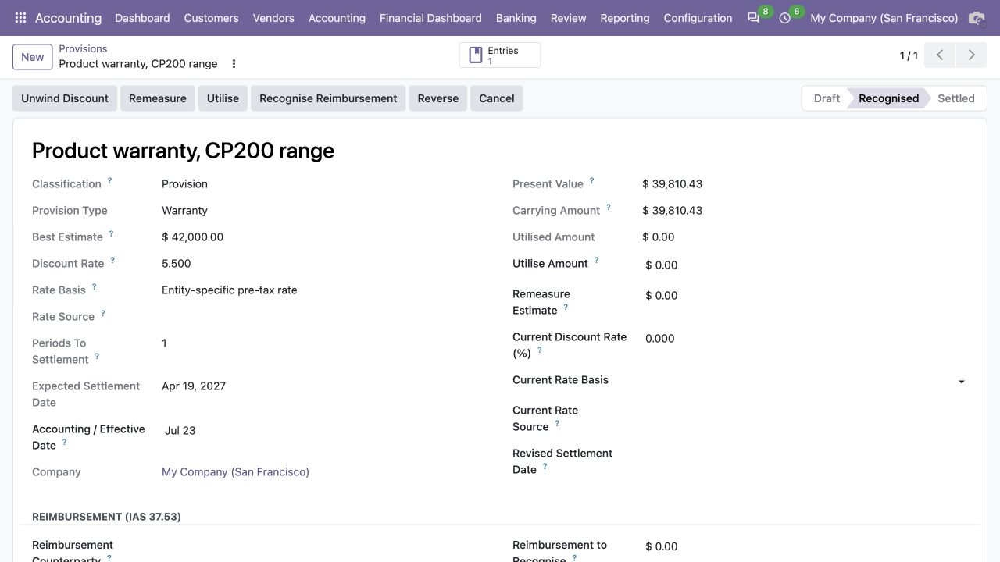
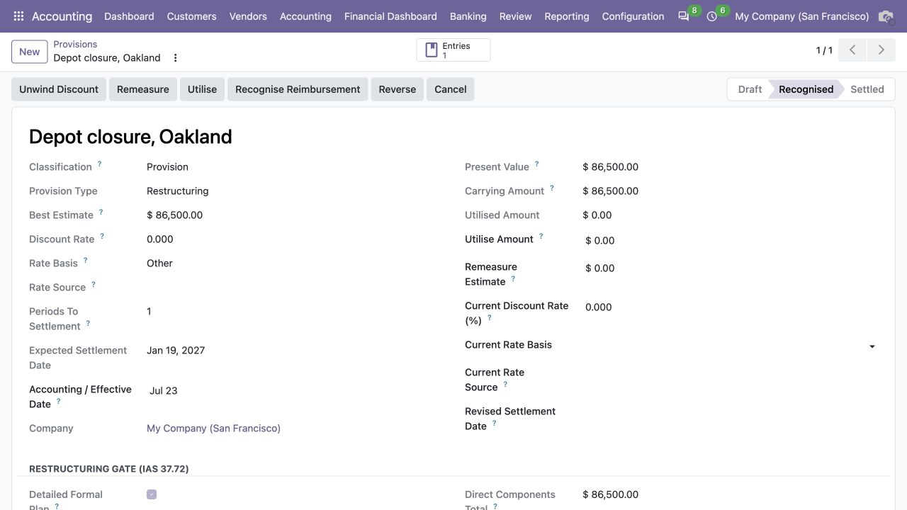

ERP HERITAGE / ODOO 20 COMMUNITY
IAS 37 Provisions
Recognise, discount, unwind, remeasure and utilise IAS 37 provisions with every step posted to the ledger and locked, while contingent liabilities and assets stay disclosure only and are never posted.
LGPL-3 · Odoo 20 · v20.0.1.2.0 · Module guide, setup, workflows and rollout checks
The purpose
Make the next finance decision clearer.
A dedicated IAS 37 provision register for Odoo 20 Community. Each provision is recognised at the present value of the undiscounted best estimate, posting a debit to the expense account and a credit to the provision liability. Where the time value of money is material, a pre-tax discount rate and a settlement horizon discount the estimate, and the Unwind Discount action accretes the carrying amount towards the undiscounted figure by posting the period finance cost. Remeasure books a change in estimate through profit or loss, Utilise settles expenditure against the liability, and Reverse writes back a provision no longer required. Contingent liabilities and contingent assets are held for disclosure only and any attempt to post them is refused. Posting is gated to the EH Accounting Manager group and every generated journal entry is sealed against edit.
Inside Odoo 20
See the accounting workflow.
Captured from Odoo 20 Community using synthetic demonstration records. Configuration screens show the available workflow; external service connectivity still requires the relevant provider setup and validation.

Recognised warranty and restructuring provisions show estimates, present values and carrying amounts.
Captured 2026-09-22 from isolated Odoo 20 Community database with synthetic demonstration records. No external submission or live banking activity is represented.

Recognised warranty provision displays discount assumptions and subsequent-measurement actions.
Captured 2026-09-22 from isolated Odoo 20 Community database with synthetic demonstration records. No external submission or live banking activity is represented.

Recognised restructuring provision records its settlement estimate and dedicated restructuring controls.
Captured 2026-09-22 from isolated Odoo 20 Community database with synthetic demonstration records. No external submission or live banking activity is represented.
Inside this module
Built around the work your team does.
Present value done properly
A pre-tax rate and a period count discount the best estimate to present value, and the Unwind Discount action accretes the carrying amount one compounded step per whole period that has fallen due, capped so it never overshoots the undiscounted estimate.
Contingencies never touch the ledger
Contingent liabilities and contingent assets are flagged as disclosure only. Recognising them is blocked at the action, and a validation constraint refuses any contingent item that reaches a recognised or settled state (IAS 37.27-28).
State follows the postings, not the keyboard
A recognised provision cannot be re-keyed to settled, reversed or cancelled by a raw write, and its measurement inputs freeze once posted. Transitions run only through the Utilise, Reverse and Cancel actions that post the matching journal entry.
Calendar-based unwind
Annual anniversaries and a final settlement-date stub determine when discount periods fall due. Repeat clicks cannot recognise a period twice, and each catch-up boundary keeps its own dated sealed entry.
Current-rate remeasurement
A discounted remeasurement refuses to reuse the frozen recognition rate: the manager stages the current pre-tax rate, basis and evidence, which become the next unwind basis.
Actual settlement above carrying
The provision debit is capped at carrying amount and any excess actual expenditure is debited to its configured expense account, while the full payable or receivable settlement line carries the counterparty.
Frozen after posting
Journal identity and recognised measurement inputs freeze after posting; changes move only through sealed lifecycle actions, and a remeasurement to nil closes as reversed instead of stranding an empty recognised record.
IAS 37 register
Legal, constructive, onerous, restructuring, warranty and other provisions sit beside contingent liabilities and contingent assets, with explicit nature, uncertainty, timing and rare-exemption disclosure evidence.
From input to outcome
Follow the complete workflow.
Prepare the business inputs
Classify the matter using the supported provision or contingency path and retain the underlying assessment. Gather obligation assessments, cash-flow estimates, timing, discount rates, provision accounts and reimbursement evidence. Use a representative case with a known expected result so the team can separate configuration decisions from unexpected behaviour. Keep the supporting commercial or accounting evidence available during review.
Run the supported operation
Build the cash-flow and discounting assumptions, then review initial recognition and later unwind or remeasurement. Follow the record’s available actions in the order intended by the workflow. Review the selected company, relevant dates and any validation messages before continuing. If the source data changes, reassess the result against the updated evidence.
Worked operating scenario
You raise a warranty provision, enter the best estimate, a discount rate and the periods to settlement, and press Recognise. The present value posts as expense against the provision liability. Each period you press Unwind Discount and the finance cost accretes the liability towards the full estimate. When a claim is paid you enter the amount and press Utilise, settling it against the provision; once the carrying amount reaches nil the provision moves to settled automatically. If the estimate changes you press Remeasure to book the difference through profit or loss.
Review the result in context
Record utilisation, reversal or settlement through the available workflow and reconcile it to the provision’s history. Compare the outcome with the expected treatment for this case and record the reason for any difference that requires follow-up. Give exceptions an owner so they do not disappear inside a period-end spreadsheet.
Make the process repeatable
Keep probability, legal and commercial judgements with responsible specialists; a calculation record does not determine whether an obligation exists. Include the accepted operating example, configuration choices and unresolved dependencies in the handover. Review them when business policy, source data or the surrounding Odoo applications change.
Product views
Inspect the working screens.
Product screenshots supplied with this module. Records and amounts are illustrative; appearance can vary with your configuration and release.

Provision recognised and discounted
Business situations
Where this module fits.
Focused operational adoption
IAS 37 Provisions is relevant to controllers managing provisions and contingent matters who need to answer this question: Which obligations warrant recognition, which require disclosure, and how does the recognised amount change over time? Start with the process that creates the decision, identify its owner and agree what evidence the reviewer needs. A narrow pilot helps the team evaluate the supported workflow using its own accounting data before broadening access.
A reviewed period-end handover
Use the module’s financial instruments and risk role as one part of a controlled close. Bring the relevant obligation assessments, cash-flow estimates, timing, discount rates, provision accounts and reimbursement evidence to the review, then explain the result alongside the business event it represents. Establish which outputs become part of the reporting pack and which outstanding matters need a separate accounting decision.
A clear implementation acceptance case
Turn the business question into an acceptance case: Which obligations warrant recognition, which require disclosure, and how does the recognised amount change over time? Use one ordinary example and one relevant exception from the supported scope below. Ask the intended operator to prepare it and the reviewer to explain the result. Retain that accepted example with the deployment notes so future changes can be assessed against an understood process.
Before the first result
Prepare a clean, reviewable starting point.
Agree scope before configuration
Confirm that the organisation needs the supported financial instruments and risk process described here. Identify the responsible controllers managing provisions and contingent matters and write down the decision they expect the module to support. Use the limitations section to separate shipped behaviour from an integration, professional judgement or operational service that needs another owner.
Bring the required data
Prepare obligation assessments, cash-flow estimates, timing, discount rates, provision accounts and reimbursement evidence. Check the relevant records in the intended company and use dates that match the business event. Resolve missing accounting configuration before evaluating calculated output; plausible-looking totals do not establish that the chosen inputs or policies are correct.
Check the installed foundations
This module declares Accounting Suite Base as part of its installation foundation. Its direct standard-Odoo dependencies are account, mail. Review the actual dependency set in the target database before a rollout, especially where another addon also extends the same accounting models, menus or posting actions.
Set up an owned review routine
Define who operates IAS 37 Provisions, who reviews unusual results and who maintains configuration. Run the representative workflow below in a test database using the intended users. Confirm that users can reach the work they own and that the reviewer understands the available evidence before moving the process into live operation.
Workflow reference
Understand the records and controls.
Complete posting lifecycle
Recognition, current-rate remeasurement, calendar-based discount unwind, reimbursement recognition, utilisation including expenditure above carrying, reversal and contingent-asset recognition each post sealed balanced entries.
IAS 37.84-92 output
A period-selectable disclosure report presents opening balance, additions, amounts used, releases, unwind, closing balance, contingencies, reimbursements and qualitative notes, with list, pivot and graph analysis.
Depth measurement
Onerous-contract estimates derive from fulfilment economics, restructuring components are scoped and re-gated at recognition and remeasurement, and current discount-rate evidence is adopted at each reporting-date review.
Counterparty and tax integrity
Reimbursement and payable/receivable settlement legs carry their counterparties; provision liabilities and reimbursement assets feed deferred tax separately without balance-sheet netting.
Company and audit controls
Company-isolated numbering, server-frozen journal identity, exact accounting dates, row-locked lifecycle transitions and independently revalidated quarantine release preserve the accounting trail.
Cost of Fulfilling
Costs that relate directly to fulfilling the contract: the incremental costs plus an allocation of other costs that relate directly to it (IAS 37.68A, 2020 amendment).
Penalty of Exiting
Compensation or penalty arising from failure to fulfil the contract. Zero means there is no exit option, so the net cost of fulfilling is not capped (IAS 37.68).
Direct Components Total
Sum of the direct cost components; must equal the best estimate before a restructuring provision can be recognised (IAS 37.80).
Best estimate
Undiscounted best estimate of the expenditure required to settle the obligation (IAS 37.36). For an onerous contract it derives from the fulfilment/penalty inputs (lower of the net cost of fulfilling and the penalty of exiting, IAS 37.68) and is read-only unless the manual override is set.
Rate Basis
Attestation of what the discount rate is: IAS 37.47 requires a pre-tax rate reflecting current market assessments of the time value of money and risks specific to the liability.
Accounting / Effective Date
Explicit date used by the next provision posting action. No posting action derives its date from the server clock. Review this value before Recognise, Unwind, Remeasure, Utilise, Recognise Reimbursement, or Reverse. Integrations may instead pass an explicit date to the action method.
Last unwind date
Date up to which the discount has been unwound. The next unwind accretes only the periods elapsed since this date.
Remeasure estimate
Revised undiscounted best estimate of the obligation still outstanding. Enter it and use Remeasure to book the change in estimate to profit or loss (IAS 37.59). Ignored for an onerous contract without manual override: there the revision is staged through the revised fulfilment/penalty inputs.
Revised Restructuring Components
Full revised component set considered at remeasurement. Direct costs are re-gated under IAS 37.72/80-81 and atomically replace the recognised set only after the journal posts.
Inflow Virtually Certain
When the realisation of income is virtually certain the related asset is not a contingent asset any more and is recognised as an asset against income (IAS 37.33). Until then the item stays disclosure-only.
Reimbursement to Recognise
Expected reimbursement that is virtually certain to be received. Recognised as a SEPARATE asset, never netted against the provision; capped at the provision carrying amount (IAS 37.53).
Reimbursement Recognised
Current carrying amount of the reimbursement asset recognised against this provision. It is re-capped when the obligation falls and derecognised when the provision reverses. The P&L credit goes to the provision expense account (permitted net presentation, IAS 37.54); the balance sheet keeps asset and liability gross.
Rare Seriously Prejudicial Exemption
IAS 37.92 exemption from specific information in extremely rare cases where disclosure would seriously prejudice the entity's position. A reason remains mandatory.
Cost Kind
Direct kinds enter the provision and must sum to the best estimate (IAS 37.80). Excluded kinds relate to the future conduct of the business and never enter the sum (IAS 37.81); they are registered here for completeness only.
Follow an obligation from estimate to settlement
Illustrative implementation exercise. A business identifies a possible obligation and prepares cash-flow estimates. Record the assessment and select the supported provision or contingency path before entering a discounting calculation. Review the amount, expected timing and discount-rate basis. A numerical present value cannot itself determine whether the recognition conditions have been met. For a recognised provision, inspect later unwind, remeasurement and utilisation in the history. For a disclosure-only matter, check that the chosen treatment does not become an unintended ledger posting. Keep legal, contractual and reimbursement evidence with the responsible specialist and reconcile settlement activity to the remaining recognised provision.
Questions before rollout
Answers your finance team needs.
Who is this module designed for?
It is designed for controllers managing provisions and contingent matters. Its central business question is: Which obligations warrant recognition, which require disclosure, and how does the recognised amount change over time? The listing describes the shipped operating scope and the decisions that remain with the organisation. Evaluate it against your own records and review process, rather than treating the module name as a promise to cover every scenario in that accounting area.
What should be ready before the first run?
Have obligation assessments, cash-flow estimates, timing, discount rates, provision accounts and reimbursement evidence ready, together with the person who owns the related accounting policy. Classify the matter using the supported provision or contingency path and retain the underlying assessment. A known example makes it possible to check the result and resolve configuration questions before the process is repeated across more records or companies.
What should a reviewer inspect?
Record utilisation, reversal or settlement through the available workflow and reconcile it to the provision’s history. Keep the relevant source evidence with the output and be explicit about company, date and policy choices. The most useful review asks whether the result follows from the business inputs, not only whether the operation completed without a validation message.
How does this fit into the accounting suite?
It belongs to the financial instruments and risk family. Its declared custom dependency foundation is Accounting Suite Base. Installing the complete suite also brings other operating and specialist modules; using this focused module should be evaluated against its own dependency list and scope. Optional services still need their own configuration and agreement where applicable.
What is the most important scope boundary?
Period-end discount unwinding remains a deliberate manager action; the module does not post provision finance cost from a timer or cron. Keep probability, legal and commercial judgements with responsible specialists; a calculation record does not determine whether an obligation exists.
Does installing it validate our accounting policy?
No. IAS 37 Provisions provides the specific records, calculations or workflow described in this listing. The organisation remains responsible for its source information, accounting choices, supporting evidence and review. Where the process uses an estimate, a contract assessment or an external service, appoint the appropriate owner before relying on the output.
Scope and requirements
Know exactly what you are installing.
Period-end discount unwinding remains a deliberate manager action; the module does not post provision finance cost from a timer or cron.
Warranty population modelling is outside the register: teams supply the supported best estimate, while onerous-contract inputs and restructuring direct-cost components are measured and re-gated in the module.
Amounts are held in the provision company's currency; foreign-currency retranslation is outside this module.
Generated provision entries do not currently carry analytic distributions.
Income-tax uncertainty measurement is outside scope; recognised provision liabilities and reimbursement assets are exposed separately to the deferred-tax integration.
Standards references describe the accounting subject addressed by the module. They do not establish certification, statutory filing acceptance or suitability for every jurisdiction. Your finance team owns its assumptions, accounting policies and review.
Installation scope
Included dependencies, explained.
Odoo installs the following direct dependencies automatically. Additional dependencies can be brought in by those modules. Related modules in the wider catalogue are optional unless they appear in this dependency chain.
Accounting Suite Base
Shared reporting engine for the ERP Heritage Odoo 20 Community accounting suite, providing a reproducible report-execution audit log and a move-version result cache. Append-only audit log of every report render with user, timestamp, the full options snapshot, runtime, and a SHA-256 result hash for XLSX and PDF output, plus a multi-company analytic-aware parameterised SQL builder with no raw user input in SQL, a three-tier User/Manager/read-only Auditor privilege model, and a currency-aware XLSX writer. Odoo 20 Community accounting reporting engine, reproducible financial report audit trail, move-version report cache invalidation, multi-company parameterised SQL builder, append-only audit log, read-only auditor role, SHA-256 report hash compliance, currency-aware XLSX export, analytic-aware journal item aggregation.
Included dependency: eh_account_base. The shared reporting engine under the ERP Heritage accounting modules: an append-only render audit log, precise per-company cache invalidation, and a whitelist-only parameterised SQL builder.
Account
Odoo Community dependency required by this module. Its own dependencies and configuration remain part of the installation scope.
Odoo Community dependency required by this module. Its own dependencies and configuration remain part of the installation scope.
Acceptance guide
Run a pilot your team can trust.
The following are recommended rollout checks, not claims of additional built-in features. Apply the checks relevant to this module and retain evidence of your own results.
Start with one complete business cycle
Select a recent, closed period that your finance team understands well. Keep its approved source documents, ledger totals and existing working papers available. Reproduce that period in a staging database before working on current transactions. A familiar period makes differences visible: you can distinguish an opening balance problem from a configuration choice, a timing difference or a genuine defect. Agree which person owns each discrepancy and what evidence will close it. Successful installation is the starting point; a repeatable business outcome is the acceptance criterion.
Define the result before choosing settings
Write down the output your team needs from this module: a reviewed transaction, an exported file, a reconciled balance, an approved schedule or an operational queue. Identify who prepares it, who reviews it and who relies on it next. Make the scope concrete with one company, one reporting period and a small representative document set. Include an ordinary case and an exception. This keeps the evaluation focused on the business decision instead of the number of available screens, and gives reviewers a consistent way to compare the new workflow with their current process.
Check the edition and dependency boundary
Use the Odoo 20 edition of the module and its dependencies together. The manifest defines what Odoo installs automatically; a feature mentioned elsewhere in the wider product family is not automatically included. Review the dependency guide on this page before enabling the complete suite, especially where your deployment also uses Sales, Purchase, Inventory or website components. Confirm that your hosting arrangement accepts custom server modules and their Python requirements. Keep a copy of the installed module versions with your acceptance record so a later update can be checked against the same baseline.
Prepare master data with finance owners
Check the companies, currencies, fiscal periods, journals, accounts and partner records used by your sample. Confirm that account purposes agree with your chart of accounts and that archived records are not being selected inadvertently. Review company-specific settings while the intended company is active. Where a workflow needs bank details, analytic dimensions, product information or payment terms, validate those inputs with their owner. Clean master data reduces repeated exceptions and makes it easier to investigate the exceptions that remain. Keep the preparation list short enough for someone else to repeat it.
Keep opening balances traceable
Decide which source establishes the opening position before introducing new transactions. Save the source date, company, currency and supporting reconciliation. If a module maintains a schedule or a working-paper balance alongside the ledger, document how that opening amount should tie to the general ledger. Do not use balancing entries to hide a difference during the pilot. Classify the difference, correct its source and rerun the comparison. The resulting trail is useful both for your internal reviewer and for support if an unexpected calculation needs investigation.
Assign preparation and review deliberately
Choose named users for preparation, review and administration. Confirm their practical access by signing in as those users in staging, rather than relying on an administrator's view of the menus. A visible menu does not replace model access or record restrictions, and a hidden menu does not by itself prove that data is protected. For your own acceptance check, verify the specific business operations each role needs. If your organization requires separation of duties, include that policy in the rollout criteria and check the actual workflow against it before granting production access.
Exercise company boundaries
Run the sample with the intended company selected, then repeat the relevant navigation and search checks as a user assigned to a different company. Record which company owns each source document and each generated result. For users who work across entities, confirm how their allowed-company selection affects totals and available records. Investigate any cross-company difference before it becomes a month-end problem. Group-level work and company-level work have different scopes; use the appropriate module and document the scope on the review evidence instead of assuming one screen represents both.
Use representative currencies and dates
Include a company-currency case and, where relevant to the module, a foreign-currency case. Check the date used to select exchange rates and keep the rate source available to the reviewer. Add a transaction near a period boundary so the team can see whether document date, accounting date or another business date drives the result. Test decimal precision with a small amount as well as a large one. Record the expected rounding treatment. These checks turn vague differences in totals into questions that can be resolved against your accounting policy.
Trace one result back to its source
Choose one result and follow the available links or record references back to the original business document. Compare its company, partner, amount, currency and dates with the expected source. Where the workflow creates a journal entry, inspect the accounts and balancing lines before relying on an aggregate report. Where it exports a file, compare the file's records with the selected batch. Save a small, intelligible evidence set instead of an indiscriminate screenshot archive. A reviewer should be able to explain what happened without needing the original preparer beside them.
Treat posting as a controlled milestone
If this module creates or updates accounting entries, separate preparation from the decision to post in your operating procedure. Inspect the proposed outcome, resolve missing configuration and confirm the intended period before using a posting action. If the module does not post entries, identify the equivalent commitment point, such as sending a file or approving a review record. Record who is allowed to make that decision. The page describes the module's supported workflow; your team still needs an operating policy that fits its accounting responsibilities and approval structure.
From pilot to production
Make the workflow repeatable.
Test correction, not only success
Use a deliberately incomplete sample in staging: a missing required setting, an unsuitable date or a source document that is not ready for the next step. Observe the actual message and the record state that remains. Correct the input and repeat the operation. Check that the recovered result agrees with the ordinary successful case. For transactions already committed, use the supported correction or reversal workflow rather than editing database records. Your acceptance record should explain how staff recover from mistakes, because that is part of day-to-day usability, not an unusual administrative task.
Check repeated actions with a small sample
Repeat an import, calculation, preparation step or button action only where the documented workflow permits it. Confirm whether the expected behavior is a recalculation, a refusal, a new version or reuse of an existing record. Do not infer universal duplicate prevention from one successful test. Record the behavior of the actual operation your team will use and include it in staff guidance. A small, identifiable sample makes duplicate records easy to spot and avoids creating a misleading acceptance result from a large batch with poorly understood contents.
Review period locks before the first close
Where accounting dates are involved, inspect your company's lock settings and the role that can change them. Include one sample dated inside a closed period and one in the open period, then observe the supported behavior with normal finance access. Agree how the team will handle late documents and approved corrections. The goal is a clear route for legitimate work that preserves the reason the period was closed. Record the policy alongside the module's workflow so operators know when to stop and involve the person responsible for the close.
Validate exports with their recipient
If the module produces reports or exchange files, have the intended recipient inspect a sample. For a finance report, check the filters, company, dates, currency, labels and totals. For a bank or service file, use that recipient's own validation or test process before a production submission. Generating a structurally valid file does not establish acceptance by every provider. Keep the exact sample and any recipient feedback with the rollout record. Where no export is provided, agree which supported screen or linked record serves as the handover evidence.
Separate optional services from core work
Identify any step that depends on a separately configured provider, connector, credential or commercial service. Confirm the exact adapter and its requirements before scheduling a live demonstration. Some family modules provide deterministic rules or file preparation without a live external connection; their usefulness should be evaluated on that basis. Test a provider failure in staging only when the adapter offers a safe test route. Make it clear who manages credentials and provider subscriptions, and who should be contacted when an external service is unavailable.
Measure a realistic working session
Time the operations your staff will actually repeat, using a dataset that resembles your expected company, date range and document volume. Record the environment and sample size beside the timings. Include navigation, filtering, preparation and review rather than quoting a single best-case page load. This page makes no universal performance promise: network latency, database size, customizations and infrastructure affect results. Use measurements to choose a practical rollout batch size and to identify any operation that needs investigation before more users join the workflow.
Train through examples with expected outcomes
Give staff a short exercise that begins with a business situation and ends with a reviewed result. Include the expected amount or state, the navigation route, the point at which a reviewer becomes involved and the supported correction route. Let operators explain why their result is correct. Add only the settings and exceptions relevant to their role. A concise internal playbook built from your own pilot is easier to maintain than a large collection of unannotated screenshots, and it helps new users understand the relationship between this module and the rest of Accounting.
Make support requests reproducible
Capture the module version, Odoo version, affected company, operation, exact message and a minimal sequence of steps. Use redacted sample documents when sharing evidence outside your organization. State the expected result and the actual result separately. Include the date filters and role used, because the same record can look different with another scope or set of permissions. Never include passwords, API tokens or private keys in a support message. Good reproduction details allow the problem to be investigated without guessing at your business setup or asking staff to repeat a full close.
Rehearse an upgrade on a copy
Before deploying an update, back up the database and filestore together, and restore that backup into an isolated environment. Apply the module update there, then repeat the key pilot scenarios using the saved acceptance record. Check that existing documents remain readable and that the expected actions and menus still lead to the right workflow. Include one newly created record as well as an older one. Keep a rollback plan appropriate to your deployment and confirm that the backup can be restored before scheduling the production change.
Define a small release decision
Agree the release criteria before the pilot ends: expected financial results, access boundaries, supported corrections, output acceptance and owner sign-off. List unresolved items with their business impact instead of treating every observation as a blocker or dismissing it as cosmetic. Start production with a manageable scope and a named reviewer. Keep the first cycle's evidence so that later enhancements can be assessed against a concrete baseline. App-store descriptions help you select and understand the module; acceptance in your own configuration establishes whether the workflow is ready for your team.
Connected capabilities
Choose the next capability with context.
These related modules explain how this workflow connects to the wider accounting process. Only the dependencies declared above are installed automatically. Choose optional additions for a specific business need.
Accounting Suite Base
The shared engine that powers the ERP Heritage accounting modules for Odoo 20 Community. It auto-installs as a dependency of any ERP Heritage accounting module, so you do not need to install it by hand.
Deferred Tax (IAS 12)
This module computes deferred tax under the IAS 12 balance-sheet liability method. Each temporary difference is entered as a carrying amount and a tax base; the gap, classified taxable or deductible from the item's nature (asset, liability, or tax loss), is measured at the enacted rate resolved from a per-jurisdiction rate table at the reporting date (IAS 12.47), with a reasoned manual override and a statutory fallback. A run compares the closing position to the opening position, splits the movement into rate-change remeasurement versus origination (IAS 12.60(b)), and posts one balanced journal for the movement, recognising it in profit or loss except for lines flagged as OCI-related, whose movement routes to the OCI reserve (IAS 12.61A). Deferred tax assets are capped by line-level recoverable-profit ceilings, carryforward expiry dates, and a run-level projected-profit ceiling, with the unrecognised portion disclosed (IAS 12.81(e)). The run presents gross or net-by-jurisdiction positions (IAS 12.74) and builds the effective-tax-rate reconciliation as auto plus manual reconciling rows that always tie to the total tax expense (IAS 12.81(c)). Posting and reversal are gated to the EH Accounting Manager group and stamped for audit.
IFRS 9 Expected Loss
Expected Credit Loss measures the loss allowance on trade receivables under IFRS 9. Each run is scoped to one legal entity and carries a provision matrix of contiguous, non-overlapping ageing buckets; population reconstructs point-in-time receivable residuals at the reporting date and fails closed when a matrix band or installed exposure provider is incomplete. It computes the closing allowance, and posting recognises only the movement from the opening allowance in one balanced entry: an increase debits impairment loss and credits a dedicated non-receivable loss-allowance contra account, while a decrease reverses it (IFRS 9.5.5.8). A general 3-stage model (EAD, LGD, 12-month and lifetime PD), an explicit keyed-versus-defaulted Stage 3 PD policy, probability-weighted scenarios and optional present-value discounting are supported. Foreign-currency write-offs preserve source-currency evidence. Posting and reversal are manager-gated; reversal uses an explicit open accounting date, and a computed or posted run is frozen until its controlled revision or reversal workflow.
IAS 19 Benefits
An IAS 19 accounting layer for defined benefit valuations and defined contribution accruals. Actuarial results are imported inputs; the module has no actuarial engine. It computes the ledger mechanics for net interest, service cost, settlements, non-recycling OCI remeasurements, the asset ceiling, tied obligation and plan-asset rollforwards, and one sealed entry per valuation. A rendered IAS 19.140-141 disclosure schedule presents the recognised liability or asset net per plan. Short-term benefits, other long-term benefits, termination benefits, and reimbursement rights are explicitly outside this module's scope.
IFRS 13 Fair Value
This module records and posts fair value under IFRS 13 with IFRS 9 classification. Each item (Fair value item (IFRS 13)) is classified in the three-level hierarchy by input observability, its valuation technique is captured as market, income or cost approach, and for Level 3 the significant unobservable inputs are documented. An IFRS 9.4.1 engine derives the classification from a structured SPPI questionnaire (fixed dates, solely principal and interest, no leverage, no contingent returns) and the business model (hold to collect, hold to collect and sell, other): amortised cost, FVOCI debt, FVOCI equity election or FVTPL, with the P&L/OCI routing derived from the classification rather than chosen by hand, and nonsense combinations blocked (a liability cannot take the equity election, a derivative is always FVTPL, the election is irrevocable once posted). Remeasuring posts the change from the current carrying amount to fair value in one balanced entry and rolls the carrying amount forward. Derecognising posts the disposal entry and, atomically, settles the accumulated OCI reserve: FVOCI debt recycles it to profit or loss, an FVOCI equity election transfers it within equity to retained earnings and never through profit or loss. The Level 3 roll-forward reconciliation (IFRS 13.93(e)) can be ledger-fed from the posted entries and cannot be closed unless its closing balance ties to the fair value, and a per-item sensitivity table (input shock times elasticity) produces the IFRS 13.93(h) quantitative disclosure.
IFRS 2 Share-based Pay
A dedicated IFRS 2 share-based payment engine for Odoo 20 Community. Plans define the settlement mode, vesting terms and condition kind; grants under a plan carry the instruments, the grant-date fair value and an updatable forfeiture estimate. Period runs compute the cumulative expense per IFRS 2 and post the period delta as a sealed journal entry: equity-settled awards accrue grant-date fair value times the instruments expected to vest times the vested fraction (each graded tranche over its own vesting period), estimates true up through the current period, non-market failures reverse in full while market-condition failures never reverse once service is rendered, and cash-settled awards remeasure the liability to current fair value each period until settlement. Beneficial modifications spread their incremental fair value over the remaining vesting period, cancellation accelerates the unrecognised balance immediately, and a built-in valuation helper prices options with Black-Scholes or a Cox-Ross-Rubinstein binomial tree. The plan carries an IFRS 2.45 rollforward of granted, forfeited, exercised and expired instruments with the weighted average exercise price. Posting is gated to the EH Accounting Manager group and every generated journal entry is sealed against edit.
Odoo 20 Community Accounting Pro
ERP Heritage Community Accounting Pro installs a fixed collection of 50 direct accounting dependencies. Together with the suite itself and the transitive EH EDI Core foundation, its custom-module closure contains 52 modules. The collection brings reporting, reconciliation, payments, receivables, approvals, specialist accounting, group work and close controls into one Community installation. Its value comes from connecting those processes and their evidence; adoption still requires deliberate company configuration, accounting ownership and review. Australian BAS is available separately and installs the suite as its accounting foundation.
Plan the surrounding workflow
Companion playbooks, with scope made explicit.
The following playbooks explain adjacent work in named companion modules. They are included here to help you plan the handoff around this module. Each companion is labelled as an installed dependency or an optional addition. These capabilities belong to that named companion, not to the standalone module you are reading about.
Optional companion; requires separate installation
Deferred Tax (IAS 12)
Compute deferred tax under the IAS 12 balance-sheet liability method, then post the period movement to profit or loss or to OCI as one balanced, audit-stamped journal entry.
The liability method, done properly
Temporary difference equals carrying amount less tax base, classified taxable or deductible by nature, multiplied by the enacted rate. Assets, liabilities, and tax losses each follow the correct IAS 12.15-24 sign convention rather than a single flat formula.
Only the period movement hits the ledger
Each line carries an opening position, and the run posts the closing-less-opening movement as one balanced entry. Deferred tax asset and liability legs are debit and credit natured, and the expense or OCI counterpart is the balancing plug, so the entry ties to the cent.
Posted figures are frozen and manager-gated
Once posted or reversed, the measurement fields on the run and its lines are locked at the ORM layer. Posting, reversal, and cancellation require the EH Accounting Manager group, and each action is timestamped with the acting user.
Recoverability cap
A deferred tax asset is recognised only to the extent of projected recoverable profit (IAS 12.24/34): the deductible difference is capped at the entered recoverable amount before the rate is applied, and the unrecognised portion is tracked separately for IAS 12.81(e) disclosure. A hard not-recoverable flag excludes the DTA entirely.
Opening tie-out
Each line compares its entered opening to the same difference's closing on the prior posted run, matched by name within the company, and raises a tie-out flag when they disagree so a keying error that would silently mis-state the movement is caught before posting.
OCI routing
Lines flagged as recognised in OCI have their movement routed to the OCI reserve rather than profit or loss (IAS 12.61A), and posting is blocked with an explicit message if an OCI line exists but no OCI equity account is configured.
Frozen after post
Re-pointing a draft line's Run at a posted run, resetting a posted run to draft, or deleting a posted run are each blocked, so a plain user cannot lift the figure freeze on a GL-backed movement through a raw ORM write.
No silent nil post
A run whose net movement is nil raises rather than posting an empty entry, and a missing asset, liability, expense, OCI account, or journal each surface a named, explicit error at post time.
Review this companion’s own setup and scope before connecting the workflows. Keep the company, reporting date and business document references consistent at the handoff.
Optional companion; requires separate installation
IAS 8 & 10 Events
Two disciplined registers for IAS 8 accounting changes and IAS 10 events after the reporting period, with manager-gated, freeze-once-posted general ledger booking of the restatement and the adjusting entry.
The restatement is a real trail, not a memo field
Each affected line item carries as previously reported, the signed adjustment, and the computed restated amount, and the register totals those adjustments into the opening retained-earnings impact, so the disclosure and the figure that hits equity come from the same lines.
Treatment is derived, and dividends are protected
Adjust-or-disclose is computed from whether the event evidences conditions existing at the reporting date. A dividend declared after year end cannot be marked adjusting, a constraint blocks it, because it is a non-adjusting event that is disclosed, not recognised as a liability.
Posted figures are frozen and only unwound by reversal
Booking is restricted to an EH Accounting Manager. Once posted, the driving fields and lines are locked, deletion is refused, and the only correction path is Reset to Draft, which posts a reversal and reopens the record so nothing drifts away from its ledger entry.
Dividend guard
A dividend declared after the reporting period cannot be flagged as an adjusting event; a validation constraint refuses it, because IAS 10.12-13 treats it as non-adjusting, disclosed and not recognised as a liability at the reporting date.
Estimate lockout
A change in accounting estimate is derived as prospective and is refused for posting; only retrospective policy changes and error corrections can book an opening retained-earnings restatement (IAS 8.36).
Create-append hole closed
Adding a restatement line to an already posted change is blocked at create time, not just on write and unlink, so the stored retained-earnings impact cannot silently drift away from the posted journal entry.
Reversal, not deletion
A posted restatement or adjusting event cannot be deleted or raw-reset through the ORM; both legs stay in the ledger and the only way out is a manager reset that posts a reversal, preserving the audit trail.
Balance by construction
Both the single net plug and the per-account comparative trail derive one balancing opening retained-earnings leg from the summed adjustments, and a zero net impact is refused rather than posting an empty entry.
Review this companion’s own setup and scope before connecting the workflows. Keep the company, reporting date and business document references consistent at the handoff.
Optional companion; requires separate installation
Period Close Workflow
The spreadsheet month-end close, moved into Odoo with a real sign-off chain and a segregation-of-duties gate.
Segregation of duties, enforced
The preparer cannot request review. The reviewer cannot approve. A third, different Accounting Manager performs final sign-off. These are named server-side refusals, not a policy note in a manual.
Templates and runs stay separate
A run copies the template into independent per-run task instances. Editing this period never mutates the template and never reaches back into a prior closed run. The append-only sign-off history survives every reopen cycle.
Yours to keep
LGPL-3 source on disk. No activation key, no phone-home, no recurring licence. Tasks and sign-offs are queryable, exportable records with server-owned audit anchors. Free today, free at renewal, because there is no renewal.
RE-MARK · NO-OP
Clicking Mark Done on an already-done or not-applicable task is a no-op that preserves the original signer and timestamp. The audit trail cannot be quietly overwritten by a second click, and a regression test guards the prior bug where the check compared against a non-existent state.
OPTIONAL TASKS
Optional tasks (Is required false) never block the request-approval transition, so a close can proceed with optional items still pending. Only required tasks gate the close, which is verified by test.
EMPTY CHECKLIST
Creating a run from a checklist with zero task templates raises an error instead of producing an empty, meaningless run.
MANAGER-ONLY RESET
Only an Accounting Manager can revert a completed task to pending. The reset clears the completion fields and any blocked reason, a controlled rework path that ordinary users cannot trigger and that is itself recorded in chatter.
PERIOD AUTO-DERIVE
Setting the period end auto-fills the period start to the first of that month only when the start is empty or out of range, so a deliberately custom range is left intact.
Review this companion’s own setup and scope before connecting the workflows. Keep the company, reporting date and business document references consistent at the handoff.
ERP Heritage
Plan your first successful cycle.
Start with the workflow, setup and acceptance guide above. For implementation or support, share your Odoo version, module version, business scenario and a redacted example. Keep credentials and personal data out of support messages.
Published by ERP Heritage. Odoo is a trademark of Odoo S.A.; this independently developed application is not an Odoo S.A. product or endorsement.
Package: eh_account_provisions · Release: v20.0.1.2.0 · License: LGPL-3.